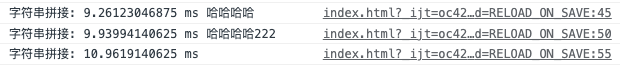
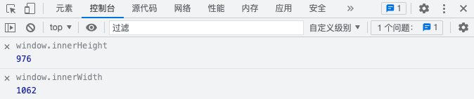
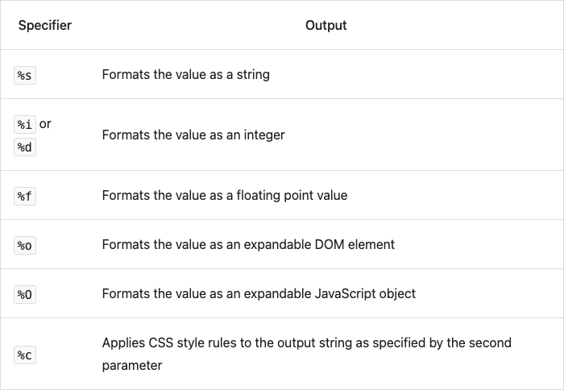
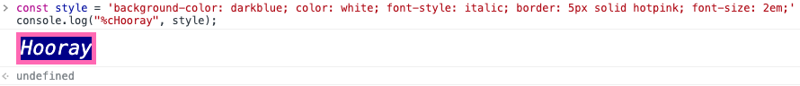

控制台
可以通过控制台打印右边的文件链接点击查看是在源代码的什么地方触发打印的，点击可以跳转。

实时监控某个值
点击控制台上方的小眼睛，在上方添加表达式，可以在运行过程看它的值。当我们调整窗口大小的时候，该值就会变化。

格式化展示信息
我们可以给控制台的输出设置样式，或者使用模板输出内容，占位符如下。

我们可以通过这些给控制台输出设置样式，例如
const style = 'background-color: darkblue; color: white; font-style: italic; border: 5px solid hotpink; font-size: 2em;'
console.log("%cHooray", style);
上述代码会输出下面的内容

更多使用和实例参考官方文档。
Console API说明
常见的API
- console.debug
- console.log
- console.info
- console.error
- console.warn
其他API
- console.assert(expression, object) 断言，可在object中定义断言失败的错误；
- console.clear() 清理控制台，如果设置了保留日志，该方法无效；
- console.count([label]) 统计打印次数，里面的label默认是default；
- console.countReset([label]) 重置打印次数，从0开始；
- console.dir(object) 打印节点的时候可以展开属性，默认是展开的节点
- console.dirxml(node) 打印节点，使用xml的形式
- console.group(label) console.groupEnd(label) 打印在这期间的内容会被分组，可以折叠，默认是展开的
- console.groupCollapsed(label) console.groupEnd(label) 打印在这期间的内容会被分组，可以折叠，默认是折叠的
- console.table(array [, columns]) 可以将数组打印成表格的形式，columns是表示打印的列，默认就是全部。
- console.time([label]),console.timeLog([label], [data]) console.timeEnd([label]) 两个console之间执行代码的时间。
- console.trace() 打印调用堆栈
代码实例
console.assert(1 > 2, "1>2不成立");
console.count("计数器")
for (let i = 0; i < 10; i++) {
console.count("计数器")
}
console.countReset("计数器")
// 又从1开始了
console.count("计数器")
console.dir("dir", document)
console.dirxml("dirxml", document)
console.log("log", document)
console.group("期间的打印会分组")
console.log("111")
console.log("222")
console.log("333")
console.log("444")
console.groupEnd();
console.groupCollapsed("期间的打印会分组,默认折叠")
console.log("555")
console.log("666")
console.log("777")
console.log("888")
console.groupEnd();
const data = [
{name: "张三", age: 21, addr: "上海"},
{name: "李四", age: 70, addr: "山西"}
];
console.table(data, ["name", "addr"]);
console.time("字符串拼接")
var a = "";
for (let i = 0; i < 100000; i++) {
a += "hello";
}
console.timeLog("字符串拼接", "哈哈哈哈")
var b = "";
for (let i = 0; i < 10000; i++) {
b += "hello";
}
console.timeLog("字符串拼接", "哈哈哈哈222")
var c = "";
for (let i = 0; i < 10000; i++) {
c += "hello";
}
console.timeEnd("字符串拼接")
function fn1() {
fn2()
}
function fn2() {
fn3()
}
function fn3() {
console.trace("test");
}
fn1();
其他工具方法
- $(selector [, startNode]) 相当于 document.querySelector()
- \$$(selector [, startNode]) 相当于 Array.from(document.querySelectorAll())
- monitor(function) 监控方法执行，如果执行了就会在控制台打印并展示调用的参数，例如monitor(alert)；unmonitor(function) 取消监控
- monitorEvents(object [, events]) 监控事件执行，当事件触发的时候就会执行，例如 monitorEvents(window, "resize")，如果多个事件需要使用数组形式传入;使用 unmonitorEvents(object[, events])取消监控
- profile([name]), profileEnd([name]) 监控代码段之间的性能，会自动在性能面板拍快照；
更多请查看官方文档。
快捷键
- 聚焦到控制台：Control+`
- 清空控制台：Command+K / Control+L
- 控制台换行：Shift+Enter
- 展开变量的所有属性：Option+Click